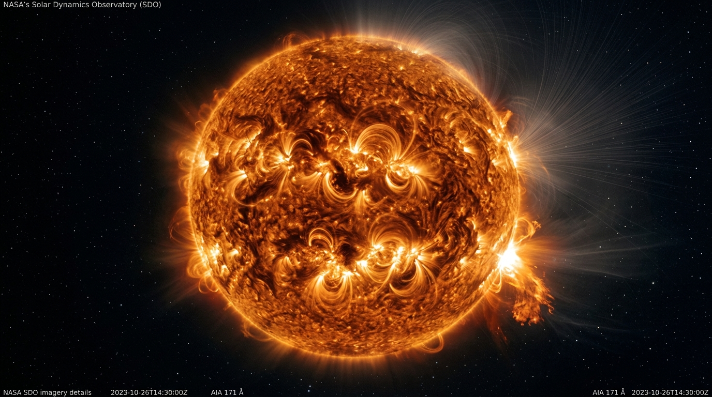

Predicting Major M & X Class Solar Flares Within 24 Hours
Operational machine learning pipeline extracting 18 magnetic-field parameters (SHARP) measured by NASA's Solar Dynamics Observatory (SDO). Evaluated using True Skill Statistic (TSS) against strict time-based splits.
High-Risk Active Sunspot Detected (NOAA AR 14549)
Model indicates a 99.6% probability of an M- or X-class solar flare eruption within the next 24 hours driven by extreme polarity inversion line magnetic flux gradients.
Current Active Sunspot Regions & 24-Hour Forecast
Machine learning probabilities for major (M/X) flare release across near-real-time active regions currently on the solar disk.
Complex magnetic morphology, extreme polarity inversion gradient (R_VALUE = 4.95).
Simple dipolar active region, low magnetic shear.
Decaying sunspot region approaching western limb.
Model Comparison & The "Accuracy Lie"
Why standard accuracy is useless for space weather events and how True Skill Statistic (TSS) reveals genuine predictive power.
Model Performance Table (Holdout Test 2014–2015)
| Model Architecture | TSS (Main) | HSS | Recall | Precision | Accuracy |
|---|---|---|---|---|---|
| Logistic Regression (Balanced)WINNER | 0.650 | 0.245 | 80.4% | 18.1% | 84.5% |
| Random Forest | 0.279 | 0.259 | 31.5% | 27.0% | 93.8% |
| SVM (RBF) - Bobra baseline | 0.233 | 0.172 | 29.5% | 16.9% | 91.3% |
| XGBoost | 0.227 | 0.229 | 25.8% | 26.2% | 94.1% |
Best Model Confusion Matrix (Logistic Regression)
Test Set Performance: 10,836 Sunspot Snapshots
What Drives Solar Flares? (The Top Magnetic Features)
NASA SDO extracts 18 physical magnetic properties (SHARP parameters). Here is how each influences flare triggering in plain English.
R_VALUE
Polarity Inversion Line Flux (R)
Measures magnetic flux concentrated near strong-field Polarity Inversion Lines (PILs). Sharp, steep borders between North and South magnetic poles produce high magnetic gradients that spark violent reconnection events.
TOTUSJH
Total Unsigned Current Helicity
Direct proxy for the twist, writhe, and topological knotting of coronal flux ropes. When magnetic fields are twisted beyond critical thresholds, solar magnetic kink instabilities trigger catastrophic flare explosions.
TOTPOT
Total Free Magnetic Energy
Quantifies the excess energy stored above the lowest-energy potential field state. This non-potential energy is the fuel reservoir that gets rapidly converted into kinetic energy and X-ray radiation.
All 18 SDO Magnetic Parameters Ranked by Importance
Click any parameter for physical definition and unitsInteractive Sunspot Flare Risk Simulator
Adjust the key magnetic parameters below to simulate active region conditions and watch the trained ML model compute 24-hour flare probabilities live.
Moderate Magnetic Complexity
Active region exhibits typical baseline magnetic shear without critical PIL concentration.
Academic Publication Figures
Figures created by make_plots.py for the research report, presentation slides, and viva examination.

Fig 1: TSS vs. Accuracy Comparison
Visual proof that accuracy masks lack of skill, while TSS exposes genuine forecasting ability.

Fig 2: Best Model Confusion Matrix
Evaluated on the 2014–2015 holdout test set (352 true flares caught out of 438).

Fig 3: Magnetic Feature Importance
R_VALUE, TOTUSJH, and TOTPOT identified as the dominant physical drivers.

Fig 4: Extreme Class Imbalance
Severe 1:37 ratio of quiet states to flare states across 14,502 training samples.
Frequently Asked Examination Questions
Q1: Why not evaluate by accuracy?
Major solar flares are rare events (~1 flaring period per 40 quiet periods). A trivial model predicting "no flare" every time gets ~98% accuracy but has zero skill ($\text{TSS} = 0$). Accuracy is uninformative under heavy class imbalance.
Q2: What is TSS and why is it superior?
TSS (True Skill Statistic) = Recall − False Alarm Rate. It measures the net rate of correct detections minus false alarms. It is mathematically independent of the positive class base rate.
Q3: Why use a chronological time-based split?
Active regions persist for days to weeks. Random k-fold splits place snapshots of the same sunspot into both train and test partitions, resulting in severe temporal data leakage and artificially inflated scores.
Q4: Why is our TSS (0.650) lower than Bobra's 0.76?
Bobra & Couvidat (2015) used 25 features and active-region grouped cross-validation during solar peak. We applied a strict future-time holdout (2014–2015.5) across different solar cycle phases, providing a more rigorous test of operational generalization.